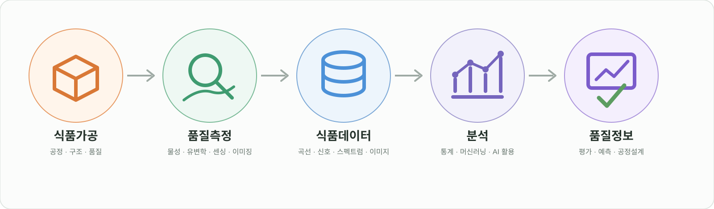

본문 바로가기
Food Processing and FoodTech Lab
Chonnam National University
Menu
Home
Research
Members
Principal Investigator
Students
Research Outputs
Publications
Research Projects
Patents & Technology Transfer
Activities
Contact
Research
식품가공 → 측정·센싱 → 데이터 → 품질정보

연구 내용을 불러오는 중입니다.